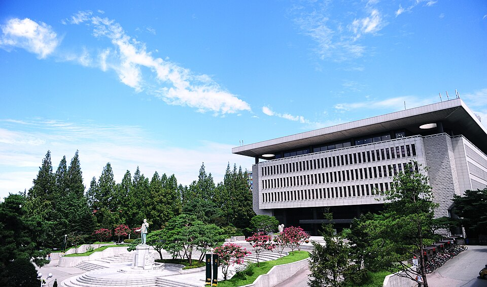

건국대학교 정시 표를 처음 열면 두 가지에 놀랍니다. 하나는 영어가 10%밖에 안 된다는 것, 다른 하나는 경영학과와 경제학과가 수학 40% 칸에 들어 있다는 것입니다. 문과라고 생각하고 준비해 온 학생에게는 뒤집히는 이야기입니다. 이 글은 그 표를 그래서 어느 과목을 먼저로 바꿔 읽는 글입니다. 고3 수학과외에 시간을 얼마나 줄지 정하는 기준이 됩니다.
| 유형 | 국어 | 수학 | 영어 | 탐구 |
|---|---|---|---|---|
| 언어중심 | 40% | 30% | 10% | 20% |
| 수리중심 | 30% | 40% | 10% | 20% |
1000점 만점으로 산출하고, 탐구는 두 과목을 반영합니다. 계열(인문·자연)이 아니라 모집단위별로 언어중심·수리중심이 정해져 있습니다. 실기를 보는 예체능을 제외하면 수능 성적만으로 선발합니다.
두 유형의 차이는 딱 하나, 국어와 수학의 자리가 바뀌는 것뿐입니다. 영어 10%와 탐구 20%는 양쪽이 같습니다. 그래서 건국대학교를 볼 때 해야 할 첫 질문은 "내 학과가 국어 40인가, 수학 40인가"입니다. 이 한 줄이 남은 1년의 시간표를 정합니다.
언어중심에는 국어국문학과·사학과·미디어커뮤니케이션학과·문화콘텐츠학과·교육공학과·영어교육과처럼 읽고 쓰는 학과가 들어갑니다. 수리중심에는 건축학부·공과대학 자유전공학부는 물론이고 경영학과·경제학과·국제무역학과·기술경영학과가 들어갑니다. 상경계열을 문과로 묶어 생각하던 학생이라면 여기서 계산이 달라집니다.
경영학과를 목표로 국어와 영어에 시간을 몰아 왔다면, 표가 알려 주는 답은 분명합니다. 수학이 40%로 가장 무거운 영역입니다. 국어보다 10%p 높고 영어의 네 배입니다. 수학 한 문항에서 잃는 점수가 영어 한 등급보다 클 수 있다는 뜻입니다.
그래서 수리중심 학과를 보고 있다면 순서는 수학 → 국어 → 탐구 → 영어입니다. 반대로 언어중심 학과라면 국어 → 수학 → 탐구 → 영어가 됩니다. 어느 쪽이든 영어가 마지막인 것은 같습니다.
영어 10%는 주요 대학 중에서도 낮은 편입니다. 다만 10%도 1000점 만점에서 100점이고, 건국대학교는 영어를 등급에 따라 환산해서 반영합니다. 등급 사이 간격이 얼마인지는 해마다 요강에서 정해지므로, "몇 점 차이"를 미리 계산하기보다 등급이 크게 무너지지 않게 유지하는 것이 현실적인 목표입니다.
정리하면 이렇습니다. 영어에 하루 두 시간을 쓰던 학생이 한 시간으로 줄이고 그 한 시간을 국어나 수학에 옮기는 것은 이 표에서 이득입니다. 하지만 영어를 아예 놓아서 등급이 두세 칸 밀리는 것은 다른 이야기입니다.
두 유형 모두 탐구가 20%입니다. 영어의 두 배이고, 두 과목을 반영하니 과목 하나당 10%씩인 셈입니다. 탐구는 범위가 좁아서 늦게 시작해도 올라가는 영역이라고들 하지만, 그 말은 남들도 늦게 올린다는 뜻이기도 합니다. 여름 이후에 시작하면 올리는 게 아니라 따라가는 것이 됩니다.
학생 수준에 맞는 선생님을 24시간 안에 추천해 드려요. 상담은 무료입니다.